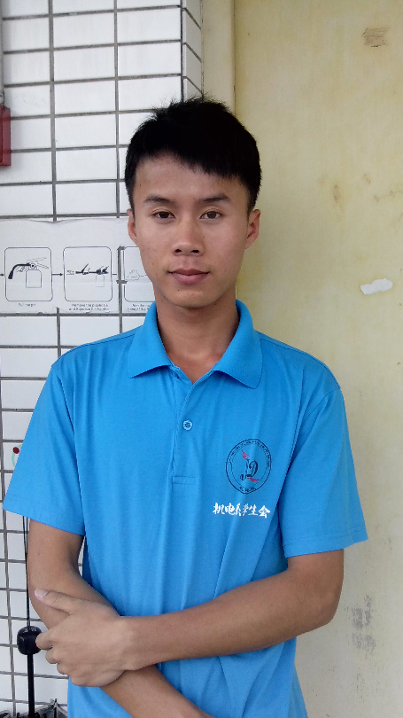

当前位置：首页 > 学习成果 > 黄维聪
美容店工作心得
在美容店也呆了差不多快4个学期了，也看见了美容店的一些变化。也是系里对这实训基地的重视，希望美容店弄越来越正规化，进了很多东西到美容店。让美容店很多东西都慢慢的从无到有。
美容店营业了也差不多快四个学期了。在这个期间段。也让学校的一部分老师知道了我们这个店的存在。但是影响面还是要更广，从美容店开始开业来。我们这边一直将它当成是一个店来经营，一直想有很多营业额，能赚钱。直到这个学期，才让我们这边醒悟，我们将这美容店的创立的根本目的没有明确好。这个美容店的创立目的，不是为了营业，不是为了赚钱。而是为了让我们美容店的成员能学到跟多的东西。能有机会进行更多的实训。本来我们这边的技术与熟练度就不够，过于要求营业额，只会造成很多潜在顾客挖掘不了。
对于现在成员的技术，很多都有待提高，这也和我们这边的管理层的原因有关，因为管理层这边的人差不多都有多重身份。很多时候都很难多方面顾及，而导致美容店这边很多时候都是靠个别理事层在维持。让一些工作的展开存在困难。
现在美容店进了很多精品和其他的美容器材。那些器材，让我们这边的成员也更能了解汽车美容中其他的处理方法，正确的使用那些器材，能让清洁更完善。
美容店里也有很多制度需要完善，这些也是我们做的不足的。要提高成员之间的关系，就需要有活动或任务让美容店的大部分成员都参与进去。要让他们在这边有存在感，负责人这边，要多和成员沟通，并给与鼓励，让他们感觉受到肯定，从而更积极的投入到工作中。在技术方面，每周可以抽一部分成员，由负责人提供培训，可以用实训室的车辆来进行练习，从而提高大部分成员的技术。
现在的美容店，需要一步一步的完善。在一届又一届中不断的吸取上一届的教训和经验，来逐渐完善下一届，一步一步走向完美。
